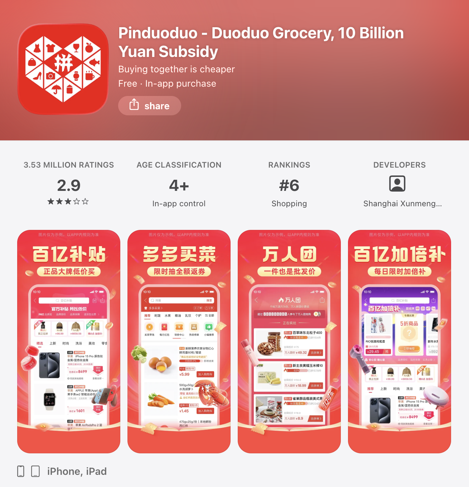

Pinduoduo
During the 2010s, a new shopping trend began to boom among price-sensitive consumers. Many websites offered generous discounts for large orders, allowing customers to group together, split costs, and buy products at much lower prices.

Launched in 2015, Pinduoduo became one of the fastest-growing e-commerce platforms by adopting the group-buying model. Customers could share product links and invite their contacts to join a group purchase in exchange for a lower price. This social approach to shopping not only offered customers cheaper products but also helped Pinduoduo attract new users and grow its customer base. Pinduoduo also focused on customers in lower-tier cities in China, where shoppers were generally more price-sensitive and less targeted by established platforms such as Alibaba and JD.com.

Pinduoduo also introduced an innovative commerce model called customer-to-manufacturer (C2M), in which consumer demand directly influences what manufacturers produce. By connecting customers more directly with manufacturers, the model creates a more efficient supply chain, allowing factories to produce what customers already want to buy.